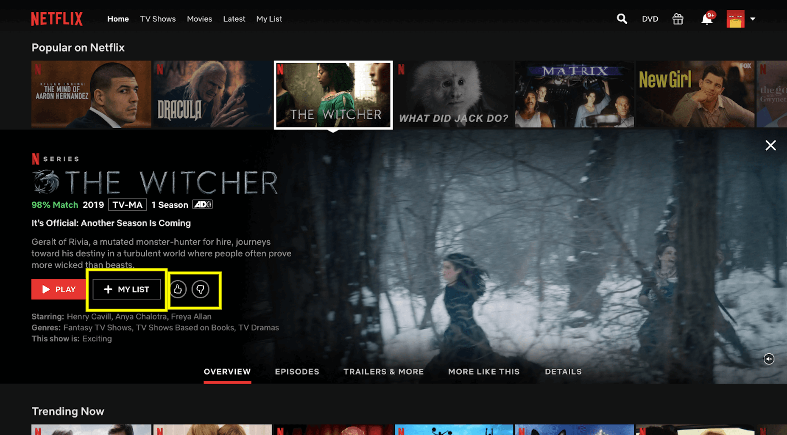

Homepage Wireframe: I want the entire site to be linked through the home page. The homepage itself wont have a
lot of information. It's
main function will be navigation
Blogs Wireframe: This format should be on all pages. I want the consistency to help users understand the
navigation of the site
The home bar being collapsing and throughout every page on the website is a feature I wanted to embed in website to allow for easy traversing on my website
Homepage Wireframes
New Homepage wireframe: With this wireframe I am starting to develop the potential visual structure of my site and how that could be achieved.
I wanted to achieve a clean look and something thats easy to navigate for users. For now Im not too interested in visuals but in the long run I do want my
website to reflect a place or at least a feeling. However I do believe the foundation for my concept for this website needs to be an effective and easy website to go in and around.
Design wireframe
Design section Wireframes: When designing this section of my website, I found it difficult to balance between having that clean open look that a lot of my
inspirations have with out making my website look boring. I knew that I wanted to separate the sections of my wireframes and inspirations because both topics will hold a lot
of content, for further context, in the near future I'm thinking of changing the name of the wireframe page to my web design page to expand the discussion to more than just wireframes but also
the colours theories, imagery and overall art direction I'm hoping to take the website in. In terms of will be in the blocks/thumbnails of each section and why theres an inclusion of that in the first place,
I want the design pages of this website to be a visual place, where imagery is the main language. In terms what the thumbnails will be I am thinking either between a collage of the most relevant pieces related to that section at the time
for example a collage of my latest wireframes, or I'm thinking a mini slide show or moving of images throughout the most relevant pieces. For example when the mouse cursor hovers over the
inspirations thumbnail, a mini slide show of my latest and most significant references will begin.
Blog Posts wireframes

When thinking about the design of my blog post section, I really fell in love with the idea of coloumn based writing.
Wiriting that was formatted horizontally while vertically spaced. This type of layout gives the feel of an old newspaper, a look that I've
always found satisfying and stylish. In terms of my IxD approach the interface elements I'm thinking of employing are the focus effect from netflix's UI. When on Netflix
and you hover your cursor over a show, the show tab increases in size over the rest of the shows next to it to give viewers a better look and more description about the show, in most
cases a trailer will begin playing. How I wanted to implement this for my blogs section is on the homepage for blogs. I want there to be 4 of my most recent blogs and each blog
will have synopsis that will almost serve as a thumbnail for viewers of the site. Then when users hover over each blog, a bigger mini screen will pop with the introduction of the blog. There will also be a "see all"
link that will generate a full list of all my blogs. I also made sure that the blog post list would be in order from left to right for visual literacy and I chose to always show 4 blogs for visual symmetrical balance.
Portfolio wireframes
Profile wireframes
Folder structure
In terms of folder structure: I'm aiming for an easy to navigate website and folder structure


.png)

.png)